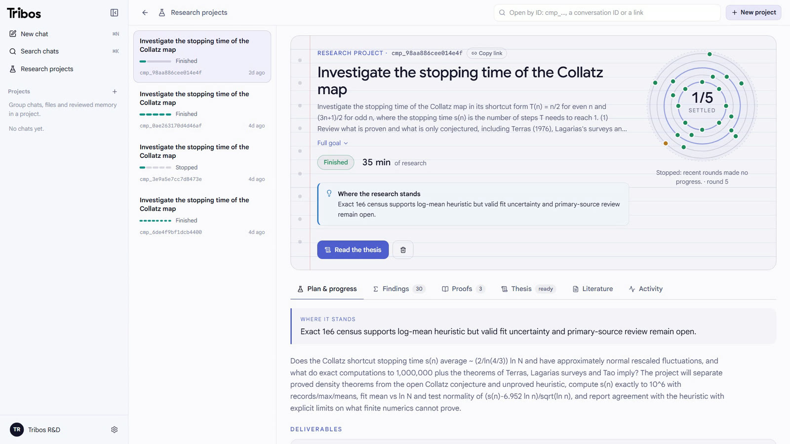
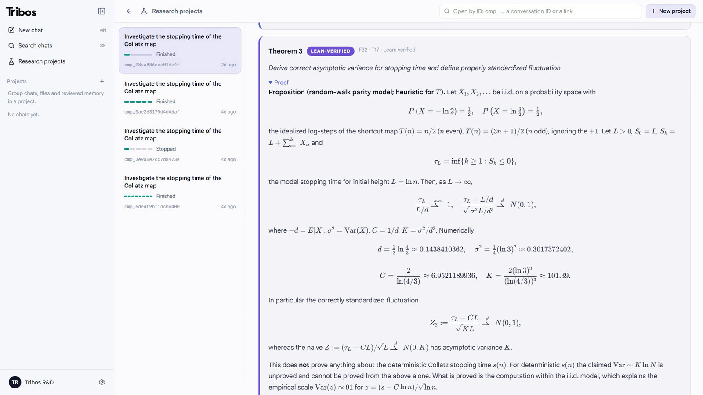
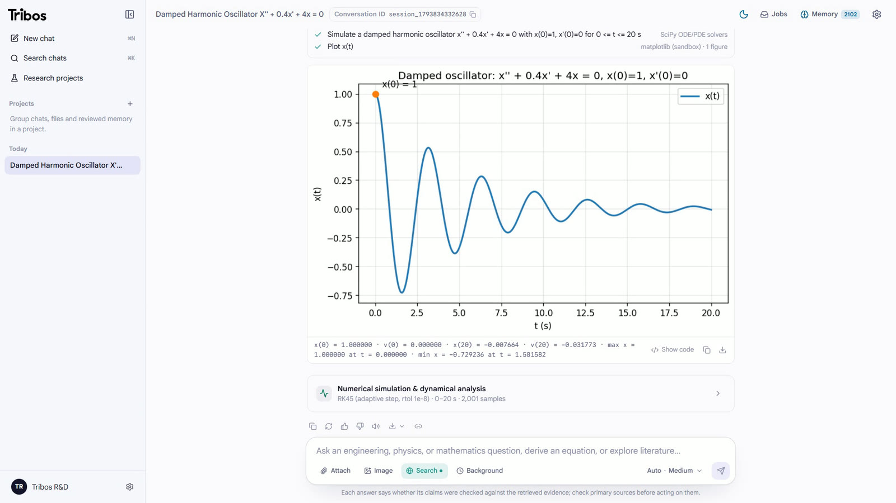
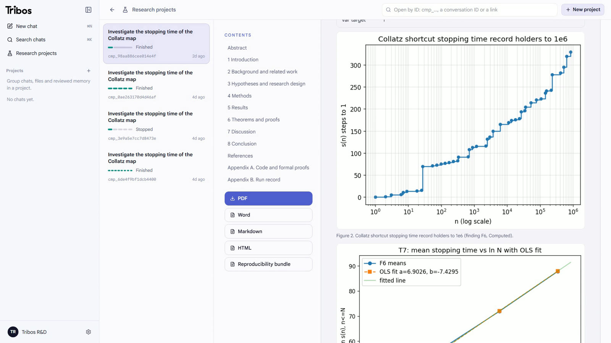

exact
Axiom
exact mathematics
Equations, calculus, ODEs, linear algebra, number theory and identities in exact arithmetic. Inequalities proved on intervals; claims tested for counterexamples.
symbolicinterval proofscounterexamples
τρίβος a worn path, diligent inquiry
A research partner for engineering, physics and mathematics. It does the work with real tools, then shows you which claims were checked, and how.
git clone https://github.com/AtlasRoX/TribosAI
Then four commands to run it on your machine.
New: real-fluid properties and field conventions







Four real kinds of work, played step by step.
A 30 mm steel shaft transmits 15 kW at 1500 rpm. What is the peak shear stress?
Investigate the stopping time of the Collatz map.
Prove that the sum of two odd integers is even.
The draft is a set of claims to check, not the answer. Every citation, figure and equation is tested against what this run actually computed or retrieved. A judge can downgrade a verdict, never upgrade it.
Draft
Written from this run's evidence only.
Claim and math audit
Citations, figures and units; every equation re-evaluated.
One bounded revision
From the defect list, forbidden to add facts or numbers.
Answer, with its status
Verified, checked, failed or not evaluated, kept apart.
Accepted by a formal proof checker: no gaps, standard axioms only.
Exact or interval arithmetic that rounding cannot fool.
Two independent implementations, agreeing on every number.
Ran once in the sandbox, with its code kept beside it.
A citation this run actually retrieved, never one from memory.
Argument only, and labelled so.
Twelve independent checks
Memory can't launder a mistake either: unverified work is never stored as evidence, refuted claims are kept as do-not-reuse, and research runs isolated from your other chats.
One language model, two ways: answering each problem alone, and inside Tribos. 238 problems from five public benchmarks, graded the same way for both.
| Benchmark | Problems | Alone | Tribos | Chart, 80 to 100 percent |
|---|---|---|---|---|
| GSM8Kgrade-school maths word problems | 49 | 100% | 98%−2.0 | |
| MATH-500competition mathematics | 50 | 100% | 100% | |
| SciBenchcollege physics, chemistry and maths | 48 | 95.8% | 97.9%+2.1 | |
| TheoremQAtheorem-driven STEM problems | 41 | 85.4% | 97.6%+12.2 | |
| GPQA Diamondgraduate-level science, multiple choice | 50 | 90% | 90% | |
| All fivepaired, same problems for both | 238 | 94.5% | 96.6%+2.1 |
Paired run, November 2026: 50 problems sampled from each benchmark (seed 1), each answered by the same language model directly and through Tribos. Twelve items whose reference answer is demonstrably wrong, or that cannot be answered from their text, are set aside for both. One grader for both: stated or boxed final answer, numeric tolerance, symbolic equivalence. Tribos is one complete run of the current version, on 7 November; the model alone is one run of 4-5 November. Neither the per-benchmark differences nor the overall one are significant in this run (exact McNemar, p = 0.27), and repeated runs of the same system differ by a few problems.
Tribos charters the work, runs the ready tests in parallel, keeps every finding in a ledger, and lets deterministic evidence rules decide what is done, refuted or still open. A live estimate shows the time left.
Charter
Rounds
Ledger
Judge
thesis
The model plans and writes. The engines compute, simulate, look up and prove, deterministically, and every call is traced.
exact mathematics
Equations, calculus, ODEs, linear algebra, number theory and identities in exact arithmetic. Inequalities proved on intervals; claims tested for counterexamples.
simulation
ODE and PDE solves with mesh and step-size studies, conservation checks, stability, continuation, model fitting and optimisation.
>>> sum(1/k**2 for k in range(1, 10**6 + 1))
1.64493306685
# π²/6 − 1.0e-6, as it should be
>>>
sandboxedcode that runs
A persistent Python session in a sandbox, for your datasets and the model's own checks. Results that matter are recomputed by a second, independent program.
the physical world
Physical constants, units and dimensions, material data, engineering calculators with their standards, uncertainty propagation, real-fluid properties, and organic structures: formulas, stereodescriptors read as geometry, stereoisomers and NMR environments.
the literature
Searches papers, scores every sentence by source, corroboration and conflict, and admits only what holds up. Uploaded papers are read and their results reproduced.
theorem odd_add_odd (a b : ℤ) :
Odd a → Odd b → Even (a + b)
✓ compiles · 0 gaps
✓ standard axioms only
proof-checkedmachine-checked proof
Statements formalised, proofs repaired from the checker's errors, and an axiom audit before anything is called proved.
Python 3.12+, uv, Node.js 22+ and a model API key. Optional: a proof checker for formal proofs, OCR for photos, Docker.
# 1. Get the code and the dependencies
git clone https://github.com/AtlasRoX/TribosAI.git && cd TribosAI
uv sync --extra dev --extra vision --frozen
# 2. Configure: put your model API key in .env
cp .env.example .env
# 3. Start the API on http://127.0.0.1:8000
uv run uvicorn app.backend.main:app --host 127.0.0.1 --port 8000
# 4. In a second terminal, the web app on http://localhost:3000
cd web && npm ci && npm run devor both at once: docker compose -f docker/compose.yml up --build
+ 11 more
+ 26 more